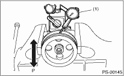
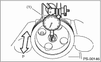
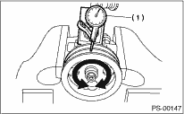
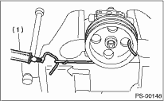
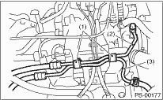
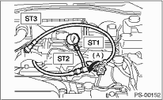
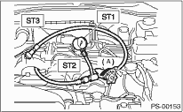

Perform the following inspection procedures and replace faulty parts.
|
No. |
Part |
Inspection |
Corrective action |
|
1 |
Oil pump (Exterior) |
(1) Crack, damage or oil leakage |
Replace the oil pump with a new part. |
|
(2) Play of pulley shaft |
Measure the radial play and axial play. If any of these exceeds the service limit, replace the oil pump with a new part. | ||
|
2 |
Pulley |
(1) Damage |
Replace with a new part. |
|
(2) Bend |
• Measure the V groove deflection. • If it exceeds the service limit, replace the pulley with a new part. | ||
|
3 |
Oil pump (Interior) |
(1) Faulty or seized of vane pump |
• Check the rotating resistance of pulley. • If it exceeds the service limit, replace the oil pump with new part. |
|
(2) Bend in the shaft or damage to bearing |
If the a string is wrapped on the pulley and rotated, and the oil pump emits a noise that is markedly different in tone and loudness from a sound of a new oil pump, replace the oil pump with a new part. | ||
|
4 |
O-ring |
Cracking or deterioration |
Replace with a new part. |
|
5 |
Bracket |
Crack |
Replace with a new part. |
Make a measurements as follows. If it exceeds the service limit, replace with a new part.
CAUTION:
• When securing the oil pump on a vise, hold the oil pump with the least possible force between two pieces of wood.
• Do not set the outside of the flow control valve or the pulley section on a vise; doing so may deform the deform the exterior or the pulley. Select properly sized wood pieces.
1. Play of the pulley shaft
Condition:
P: When applying a force of 9.8 N (1.0 kgf, 2.2 lbf)
Service limit:
Play in the radial direction (Direction 
 )
)
0.4 mm (0.016 in) or less

|
(1) |
Dial gauge |
Axial play (Direction 
 )
)
1.0 mm (0.039 in) or less

|
(1) |
Dial gauge |
2. Deflection of the pulley groove
Service limit:
1.0 mm (0.039 in) or less
NOTE:
Read the value for one surface of V groove, and then set a dial on the other face and read the value.

|
(1) |
Dial gauge |
3. Rotating resistance of pulley
Service limit:
Maximum load: 9.22 N (0.94 kgf, 2.07 lbf) or less
NOTE:
• A rather higher value may be indicated when pulley starts turning.
• Measure the load during rotation to make a judgment.

|
(1) |
Spring scale |
NOTE:
• Be sure to complete all items aforementioned in “INSPECTION,” prior to measuring hydraulic pressure. Otherwise, pressure can not be measured correctly. 
• Do not leave the valve of pressure gauge closed or hold the steering wheel at lock for 5 seconds or more in any case, this can damage the oil pump.
• Before attaching a pressure gauge, place cloth at locations where fluid is expected to spill. Wipe off any spilt fluid completely after the measurement.
1. Regular pressure measurement
(1) Connect the ST1, ST2 and ST3.
| ST1 925711000 | PRESSURE GAUGE |
| ST2 34099AC020 | ADAPTER HOSE B |
| ST3 34099AC010 | ADAPTER HOSE A |
(2) Remove the air intake duct.
(3) Disconnect the pipe C from pump.
(4) Using the gasket (Part No. 34621AC021) and bolt (Part No. 34620AC010), attach the ST2 to pump instead of pipe C.

|
(1) |
Bolt A |
|
(2) |
Pipe C |
|
(3) |
Pipe D |
(5) Attach the ST3 to the end of pipe C which is removed from pump.
(6) Replenish power steering fluid up to the specified level.
(7) Open the valve, and start the engine.
(8) Measure the regular pressure.
| ST1 925711000 | PRESSURE GAUGE |
| ST2 34099AC020 | ADAPTER HOSE B |
| ST3 34099AC010 | ADAPTER HOSE A |

|
(A) |
Open |
Service limit:
981 kPa (10 kgf/cm2, 142 psi) or less
(9) If it is not within the specification, replace the problem part for the following problems. (Pipe or hose clogged, leaks from fluid line, and mixture of foreign matter in fluid line)
2. Measure the relief pressure.
(1) Using the STs, measure the relief pressure.
(2) Close the valve.
(3) Measure the relief pressure.
| ST1 925711000 | PRESSURE GAUGE |
| ST2 34099AC020 | ADAPTER HOSE B |
| ST3 34099AC010 | ADAPTER HOSE A |

|
(A) |
Close |
Service limit:
Turbo model
7,650 — 8,340 kPa (78 — 85 kg/cm2, 1,109 — 1,209 psi)
Non-turbo model
6,700 — 7,400 kPa (68 — 75 kg/cm2, 971 — 1,070 psi)
(4) If it is not within the specification, replace the oil pump.
3. Measure the working pressure.
(1) Using the ST, measure the working pressure.
(2) Open the valve.
(3) Measure the working pressure of control valve by turning steering wheel from stop to stop.
| ST1 925711000 | PRESSURE GAUGE |
| ST2 34099AC020 | ADAPTER HOSE B |
| ST3 34099AC010 | ADAPTER HOSE A |
|
(A) |
Open |
Service limit:
Turbo model
7,650 — 8,340 kPa (78 — 85 kg/cm2, 1,109 — 1,209 psi)
Non-turbo model
6,700 — 7,400 kPa (68 — 75 kg/cm2, 971 — 1,070 psi)
(4) If it is out of specification, measure the steering effort. If it is not within specification, replace the control valve itself or control valve and pinion as a single unit, using new parts.